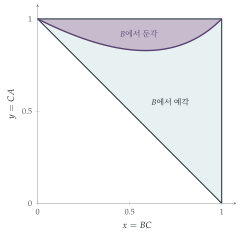

STEP III 1990, 문제 16
계속 읽기 전에 문제를 먼저 읽어 보자. 문제는 STEP Support Programme의 문제 데이터베이스에 있다: step.maths.org/questions/90-s3-q16
도입
막대를 무작위로 고른 두 점에서 부러뜨린다. 세 조각으로 삼각형을 만들 수 있을까? 잘 알려진 답은 확률(probability) \(\frac14\)이다. 그렇다면 삼각형이 만들어질 때, 그 삼각형은 예각삼각형(acute triangle)일까, 둔각삼각형(obtuse triangle)일까? 대개는 둔각삼각형이다. 만들어지는 삼각형 가운데 예각삼각형은 약 3분의 1에 불과하다. 무작위 도형에 관한 이런 질문들은 19세기부터 확률론 연구자들을 즐겁게 해 왔으며, 연속 확률(continuous probability)을 다루는 연습에 안성맞춤이다. 영역 안의 무작위 점, 부분 영역을 정하는 조건, 그리고 그 넓이를 구하는 적분이 모두 등장하기 때문이다.
이 문제는 막대를 부러뜨리는 서로 다른 두 가지 방법을 제시하고, 각 경우에 둔각이 생길 확률을 묻는다. 답인 \(3 - 2\sqrt2\)와 \(3 - 4\ln2\)는 간단한 기하에서 나오는 뜻밖의 수이다.
시작하기 전에
세 길이로 삼각형을 만들 수 있을 필요충분조건은 각 길이가 나머지 두 길이의 합보다 작은 것이다. 세 길이의 합이 \(L\)이라면, 이 조건은 가장 긴 길이에 대해 무엇을 말해 주는가? 변 \(c\)의 대각은 언제 둔각인가?
\(a + b + c = L\)일 때 \(c < a + b\)는 \(c < \frac L2\)를 뜻한다. 따라서 세 조각으로 삼각형을 만들 수 있는 것은 정확히 모든 조각이 전체 길이의 절반보다 짧을 때이다. 코사인 법칙(cosine rule)에 따라, \(c\)의 대각이 둔각인 것은 정확히 \(c^2 > a^2 + b^2\)일 때이다.
차근차근 풀기
단계 1 한 번 자른 뒤 이등분하기
조각은 \(X\), \(\frac{1 - X}{2}\), \(\frac{1 - X}{2}\)이다. 길이가 같은 두 조각은 항상 \(\frac12\)보다 작으므로, 삼각형이 만들어질 필요충분조건은 \(X < \frac12\)이다. 이 삼각형은 이등변삼각형(isosceles triangle)이고 두 밑각은 예각이므로, 둔각삼각형이 되는 것은 \(X\)의 대각이 둔각일 때뿐이다. \[X^2 > 2\Bigl(\frac{1 - X}{2}\Bigr)^2 = \frac{(1 - X)^2}{2}, \qquad\text{즉}\qquad \sqrt2X > 1 - X, \quad X > \frac{1}{1 + \sqrt2} = \sqrt2 - 1.\] \(X < \frac12\)라는 조건 아래에서 \(X\)는 \([0, \frac12]\) 위의 균등분포(uniform distribution)를 따르므로 \[\mathrm{P}(\text{둔각} \mid \text{삼각형}) = \frac{\frac12 - (\sqrt2 - 1)}{\frac12} = 3 - 2\sqrt2 \approx 0.172. \qed\]
단계 2 두 번째 구성
꼭짓점이 \((1, 0)\), \((1, 1)\), \((0, 1)\)인 삼각형 안의 \((x, y)\)에 대하여, 변의 길이가 \(x\), \(y\), \(2 - x - y\)일 때 세 삼각부등식(triangle inequality)을 확인하라.
영역은 \(\{x \leq 1, y \leq 1, x + y \geq 1\}\)이다. 부등식은 \(x + y \geq 2 - x - y\), 즉 \(x + y \geq 1\); \(x + (2 - x - y) \geq y\), 즉 \(y \leq 1\); 그리고 \(y + (2 - x - y) \geq x\), 즉 \(x \leq 1\)이다. 이들은 모두 영역 안에서 성립한다(영역의 경계에서는 등호가 성립하며, 이때 삼각형은 퇴화(degenerate)한다).■
\(B\)에서의 각은 변 \(CA = y\)의 대각이다. 조건 \(y^2 > x^2 + (2 - x - y)^2\)을 \(y\)에 대한 부등식으로 나타내라.
전개하면 \(y^2 > x^2 + 4 + x^2 + y^2 - 4x - 4y + 2xy\)이므로 \(4y - 2xy > 2x^2 - 4x + 4\), 즉 \(2y(2 - x) > 2(x^2 - 2x + 2)\)이다. \(2 - x > 0\)이므로 \[\angle ABC \text{가 둔각} \iff y > \frac{x^2 - 2x + 2}{2 - x}. \qed\]
단계 3 넓이
\(x^2 - 2x + 2\)를 \(2 - x\)로 나누어라. 그다음 영역 가운데 곡선 위쪽 부분의 넓이를 구하고, 이를 영역의 넓이 \(\frac12\)로 나누어라.
\(x^2 - 2x + 2 = -x(2 - x) + 2\)이므로 곡선은 \(y = -x + \frac{2}{2 - x}\)이다. 이 곡선은 \((0, 1)\)에서 \((1, 1)\)까지 이어지며, \(0 < x < 1\)에서 직선 \(y = 1 - x\)보다 위에, \(y = 1\)보다 아래에 있다(그림 12.21.1). 둔각 영역은 곡선과 \(y = 1\) 사이에 있고, 그 넓이는 \[\int_0^1\Bigl(1 + x - \frac{2}{2 - x}\Bigr)\mathrm{d}x = 1 + \frac12 + \bigl[2\ln(2 - x)\bigr]_0^1 = \frac32 - 2\ln2.\] 이를 \(\frac12\)로 나누면 \(\mathrm{P}(\angle ABC \text{가 둔각}) = 3 - 4\ln2 \approx 0.227\)이다.■

돌아보기
기하를 부등식으로 옮겨라. “삼각형을 이룬다”와 “둔각이다”는 둘 다 길이 사이의 부등식이 되었다.
연속확률변수의 조건부 확률(conditional probability). \(X < \frac12\)라는 조건 아래에서 \(X\)는 더 작은 구간 위의 균등분포를 따랐다.
넓이의 비로서의 확률. 영역 안에서 균등하게 고른 점에 대해, 확률은 넓이를 전체 넓이로 나눈 값이다.
숨은 수학
고전적인 부러진 막대 문제
막대를 서로 독립인 두 균등분포 점 \(U\)와 \(V\)에서 부러뜨린다. 순서쌍 \((U, V)\)는 단위정사각형 위의 균등분포를 따르고, 세 조각이 삼각형을 이루는 것은 정확히 각 조각이 \(\frac12\)보다 짧을 때이다. 이 조건은 넓이의 합이 \(\frac34\)인 작은 삼각형 네 개를 잘라 내므로 확률은 \(\frac14\)가 남는다. 삼각형이 만들어진다는 조건 아래에서 예각삼각형일 확률은 \(\frac14\) 가운데 \(3\ln2 - 2 \approx 0.079\), 즉 약 \(32\%\)이다. 이 조각들은 균등 무작위 분할(uniform random partition)의 한 예이며, 그 결합분포는 디리클레 분포(Dirichlet distribution)이다. 디리클레 분포는 베이즈 통계학(Bayesian statistics)과 자원이 무작위로 나뉘는 방식을 다루는 모형에 등장한다.
막대를 부러뜨리는 방법이 중요하다
문제의 두 방법이 비슷하게 들리는 질문에 대해 서로 다른 답 \(3 - 2\sqrt2\)와 \(3 - 4\ln2\)를 내며, 둘 다 고전적인 방법과도 다르다는 점에 주목하라. 베르트랑(Bertrand)의 현 문제(12.3 절)에서처럼, 절차를 명시하기 전까지 “무작위”라는 말은 아무 의미가 없다.
무작위 삼각형에 관한 문제는 빅토리아 시대에 인기 있던 퍼즐이었다. 루이스 캐럴(Lewis Carroll)의 Pillow Problems(1893)는 “무작위로” 고른 삼각형이 둔각삼각형일 확률을 묻는데, 그의 답도 이 절의 답들처럼 그가 택한 무작위성 모형에 전적으로 달려 있다. 무작위 삼각형에 관한 문제는 그 뒤로도 계속 놀라움을 낳았다. 예를 들어 정사각형 안에서 균등하게 고른 세 점이 둔각삼각형을 이룰 확률은 약 \(0.725\)인데, 이 값은 20세기에 들어서야 정확히 계산되었다.
사고 기술
무작위 결과를 영역 안의 점으로, 사건을 부분 영역으로 나타내고, 확률을 넓이의 비(또는 밀도(density)의 적분)로 계산하라.
대학에서 이 그림은 다변수 확률론(multivariate probability)의 토대이며, 좌표를 바꿀 때 밀도가 어떻게 변환되는지 알려 주는 변수변환 공식(change-of-variables formula)의 토대이기도 하다.
더 도전하기
고전적인 문제. 막대를 서로 독립인 두 균등분포 점에서 부러뜨릴 때, 조각들이 삼각형을 이룰 확률이 \(\frac14\)임을 보여라.
긴 조각을 부러뜨리기. 막대를 균등분포 점에서 부러뜨린 다음, 더 긴 조각을 균등분포 점에서 부러뜨린다. 세 조각이 삼각형을 이룰 확률이 \(2\ln2 - 1 \approx 0.386\)임을 보여라.
예각인가 둔각인가. 소문항 (ii)에서 삼각형 \(ABC\)가 \(C\)에서(\(AB = 2 - x - y\)의 대각) 둔각을 가질 확률을 구하라. 이를 이용하여 삼각형이 어딘가에 둔각을 가질 확률을 구하라.
가장 긴 조각의 기댓값. 고전적인 부러진 막대 문제에서 가장 긴 조각의 길이의 기댓값(expected value)이 \(\frac{11}{18}\)임을 보여라.
더 읽을거리
Martin Gardner, The Colossal Book of Mathematics (Norton). 부러진 막대 문제가 실려 있다.
Frederick Mosteller, Fifty Challenging Problems in Probability (Dover). 확률에 관한 도전적인 문제 50선.
Lewis Carroll, Pillow Problems (Dover, A Tangled Tale과 합본). 무작위 삼각형을 포함한 빅토리아 시대의 퍼즐들.